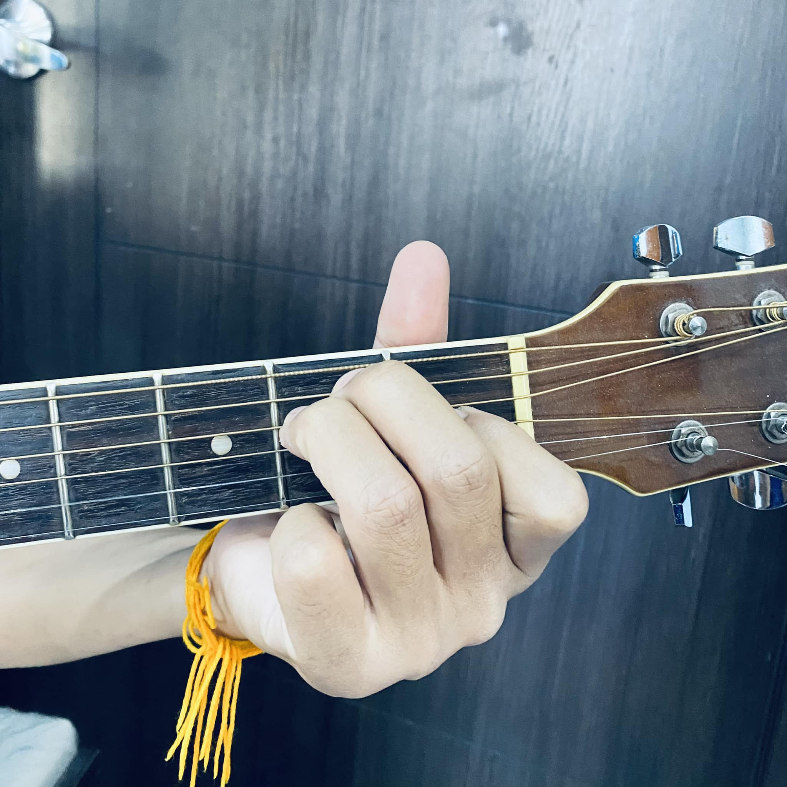

คอร์ด E
( 1 ) = นิ้วชี้กดสายที่ 3 เฟร็ต 1
( 2 ) = นิ้วกลางกดสายที่ 5 เฟร็ต 2
( 3 ) = นิ้วนางกดสายที่ 4 เฟร็ต 2
( 0 ) = สายที่ 1 เป็นสายเปล่า หรือ สายเปิด Open String
( 0 ) = สายที่ 2 เป็นสายเปล่า หรือ สายเปิด Open String
( 0 ) = สายที่ 6 เป็นสายเปล่า หรือ สายเปิด Open String
คอร์ด Em
( 1 ) = นิ้วชี้กดสายที่ 5 เฟร็ต 2
( 2 ) = นิ้วกลางกดสายที่ 4 เฟร็ต 2
( 0 ) = สายที่ 1 เป็นสายเปล่า หรือ สายเปิด Open String
( 0 ) = สายที่ 2 เป็นสายเปล่า หรือ สายเปิด Open String
( 0 ) = สายที่ 3 เป็นสายเปล่า หรือ สายเปิด Open String
( 0 ) = สายที่ 6 เป็นสายเปล่า หรือ สายเปิด Open String